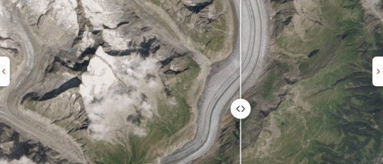

● Sentinel-2 · one clear late-summer scene per year · 2016–2025
Switzerland’s ten biggest glaciers, from 786 km up.
Every summer a satellite photographs the tongue of each one. Put two years side by side, run the years like a film, and see how much ice has gone.

20162024Ten tongues, ranked by what is left of them.
Each bar is the area the glacier covered in 1850. Teal is what it covers today; the hatching is what it lost. Select one to read its sheet.
Then and now, on one picture.
Drag a line across two summers. Or play all ten and watch the tongue pull back up the valley.
Pick the two summers. Every picture is the clearest day we could find for that year; the day and the orbit are shown on it.
Take it with you.
Save a picture, or a film of the years that plays on a phone. The year, the glacier, the facts and the source are on every frame, so it still makes sense once it leaves this page.
- 9:16For Reels, TikTok and Stories.
- 4:5For the Instagram feed.
- 16:9For slides, classrooms and screens.